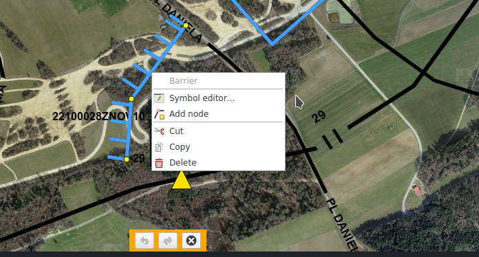

Rappresentazione della posizione/Simboli MSS
Nella scheda MSS si trova la funzionalità di rappresentazione della posizione. Questa scheda non è attiva se l'interfaccia KADAS MSS-MilX non è stata installata. La funzionalità di rappresentazione della posizione comprende il disegno e la modifica dei simboli MSS e la gestione dei layer MilX.
Disegnare i simboli MSS
Il pulsante Aggiungi simbolo apre una galleria sfogliabile di simboli MSS. Dopo aver scelto un simbolo dalla galleria, è possibile posizionarlo sulla mappa.
I simboli vengono raggruppati nei layer MilX, visualizzabili nella legenda della mappa. Nella galleria dei simboli, è possibile creare nuovi layer e scegliere a quale layer aggiungere i simboli disegnati.

I simboli disegnati possono essere modificati successivamente selezionandole sulla mappa. Gli oggetti selezionati possono essere spostati e, a seconda del tipo di simbolo, è possibile spostare i singoli punti di controllo, nonché aggiungerne e rimuoverne tramite menu contestuale. Effettuando le modifiche tramite doppio clic o menu contestuale, è possibile aprire l'editor dei simboli MilX.
Analogamente alle figure redlining, è possibile spostare, copiare, tagliare ed incollare simboli MSS singolarmente o in gruppi. Oltre ai tasti di scelta rapida e le apposite voci nel menu contestuale, vi è la possibilità di usare le funzioni Copia a... e Sposta a.. situate nella parte inferiore della mappa. Queste ultime permettono di specificare esplicitamente il layer di destinazione, altrimenti il layer MilX attuale viene usato come destinazione. Se nessun layer MilX è selezionato, viene richiesto di specificare il layer di destinazione.

I layer MilX possono essere contrassegnati come autorizzati nel menu contestuale dell'elenco delle carte. I layer autorizzati non possono essere modificati.
Scambio dei layer MilX
I layer MilX possono essere importati ed esportati come file MILXLY. MILXLY (e la variante compressa MILXLYZ) è un formato per lo scambio delle rappresentazioni della posizione. Contiene solamente i simboli MSS della rappresentazione della posizione e nessun altro oggetto come figure redlining, spilli o immagini della fotocamera.
Nell'esportazione in formato MILXLY(Z) è possibile scegliere quali layer MilX esportare e in quale versione il file debba essere creato. Inoltre può venir specificato se esportare il cartiglio della mappa definito nel dialogo di stampa.
Nell'importazione di un file MILXLY(Z) vengono importati tutti i layer in esso contenuti. Qualora il file MSS contenga definizioni di simboli basate su un vecchio standard, queste verranno convertite automaticamente. Eventuali errori o perdite in fase di conversione vengono comunicati all'utente. Se uno dei layer importati contiene un cartiglio, l'utente viene chiesto se utilizzare questo cartiglio per la stampa.
Importazione OVL
OVL è il formato dei progetti del software PCMAP Swissline. Viene supportata solamente la versione 5.0 di OVL. I file più vecchi devono essere aggiornati con il software PCMAP Swissline prima di poter essere importati in KADAS.
L'importatore OVL converte i grafici tattici ivi contenuti nei simboli MSS corrispondenti, mentre le figure geometriche e le scritte vengono trasformate in oggetti Redlining. Gli eventuali errori in fase di conversione verranno comunicati all'utente. Anche nel caso di oggetti convertiti con successo, la loro rappresentazione può differire rispetto al software PCMAP Swissline. Pertanto è consigliabile controllare i dati importati.